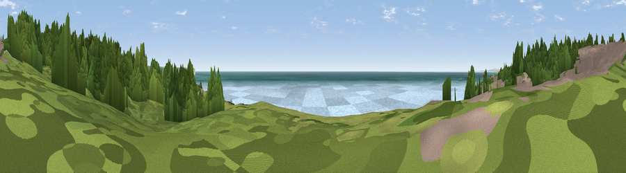

Viewpoint near Newhaven
#11014 in England · top 36% of its area beats it · near NewhavenWhere it is
The exact computed spot (TQ 42975 00275). Click the marker for map links.
The view, rendered

A 360° render of this exact spot computed from the terrain model, tree cover and land cover — summer colours, afternoon light, calibrated against photographs of famous viewpoints. Real trees, hedges and buildings will differ in detail.
The panorama
Grey silhouette: terrain skyline in each direction (720 bearings, Earth curvature and refraction included). Dashed green: skyline with trees (+15 m) and buildings (+8 m) as obstacles. Blue strip: how far the ground is visible on each bearing.
Where the view opens
Wedge length = distance to the farthest visible ground on that bearing (vegetation-aware). Rings at 10, 25 and 50 km.
What fills the view
76% water · 11% wetland · 6% grassland · 3% built-up · 3% woodland ·
Angular shares of the visible panorama (visual magnitude), not map area. Landscape diversity 0.38 (0–1 Shannon).
Key numbers
More beautiful places nearby
The staircase of upgrades: each row has a higher view potential than everything closer. Driving times are estimates from straight-line distance, calibrated against real road routing — check an actual route before setting out.
| Place | Direction | Drive | Score |
|---|---|---|---|
| Viewpoint near Newhaven | E · 2 km | ~5 min | 65.3 |
| Viewpoint near Telscombe | NW · 4 km | ~10 min | 71.6 |
| Viewpoint near Telscombe | NW · 5 km | ~10 min | 73.6 |
| Itford Hill | NNE · 5 km | ~12 min | 76.9 |
| Viewpoint near Southease | NNE · 5 km | ~12 min | 80.8 |
| Viewpoint near Firle | NNE · 6 km | ~13 min | 81.4 |
| Viewpoint near Firle | NNE · 6 km | ~14 min | 83.8 |
| Viewpoint near Firle | NE · 7 km | ~15 min | 85.4 |
50.78443, 0.02684 · source: screening · position refined by local search. Computed location — check access rights before visiting.